Alcance y Propósito de la Teología
Fundamentos y Metodología
Resumen Ejecutivo
La teología se define no como un ejercicio emocional o meramente especulativo, sino como una ciencia —entendida como la búsqueda de conocimiento coherente y consistente sobre Dios—. El análisis destaca que la teología es inevitable para cualquier creyente, por lo que el objetivo no es elegir si hacer teología o no, sino asegurar que esta sea sólida y bíblica.
Los pilares incluyen la dependencia absoluta de la Escritura, la integración de la historia de la iglesia y el rechazo a la "novedad" teológica impulsada por filosofías seculares. El propósito final trasciende el intelecto: busca la madurez, la corrección y la obediencia del individuo ante la revelación divina.
1. La Teología como Ciencia y el Rol de los Paradigmas
Históricamente, la teología sistemática se ha considerado una ciencia en el sentido clásico de la palabra latina scientia, que significa conocimiento.
El Concepto de Ciencia en Teología
Paradigmas y Anomalías
Al igual que las ciencias naturales (como la física), la teología maneja modelos o paradigmas:
- Anomalías: Son detalles o datos que no encajan en una teoría establecida
- Cambio de Paradigma: Ocurre cuando las anomalías son tantas o tan urgentes que obligan a desafiar las suposiciones anteriores y construir un modelo nuevo
- Diferencia Fundamental: Mientras que en la física los cambios de paradigma son constantes debido a nuevos descubrimientos, en la teología la fuente de información (la Biblia) es la misma desde hace 2000 años. Por ello, los cambios dramáticos en teología suelen ser sospechosos y a menudo derivan de influencias filosóficas externas más que de hallazgos textuales o arqueológicos.
2. Fuentes y Disciplinas de la Teología Sistemática
La teología sistemática no opera de forma aislada; es una síntesis de tres esferas disciplinares distintas pero interconectadas:
| Disciplina | Enfoque Principal | Función |
|---|---|---|
| Teología Bíblica | El dato crudo de la Escritura | Estudia conceptos (ej. "salvación") a través del desarrollo del Antiguo y Nuevo Testamento |
| Teología Histórica | El desarrollo de la doctrina en la Iglesia | Analiza cómo la iglesia resolvió disputas en concilios (Nicea, Calcedonia) y respondió a herejías |
| Teología Sistemática | Síntesis y organización | Reúne los datos bíblicos, los desarrollos históricos y las ideas de grandes maestros para crear un sistema coherente |
La Importancia de los Maestros Históricos
Aunque no son infalibles ni poseen autoridad apostólica, la teología sistemática valora a los "titanes" de la historia de la iglesia debido a la profundidad de su comprensión:
San Agustín
Padre de la Iglesia
Martín Lutero
Reforma Protestante
Juan Calvino
Institutas
Jonathan Edwards
Predicador y Filósofo
Santo Tomás
Doctor Angélico
3. Riesgos y Errores en la Praxis Teológica
El análisis advierte sobre varios peligros que pueden corromper el estudio teológico:
⚠️ Peligros a Evitar
- Imposición de Sistemas: El error de tomar un sistema preconcebido (como la teología reformada o el dispensacionalismo) y forzarlo sobre la Escritura. La teología debe derivar de la Biblia, no ser independiente de ella.
- El "Atomismo": Un método peligroso en la teología bíblica que trata cada parte de la Escritura como una unidad aislada, negando su unidad general y coherencia. Esto lleva a concluir erróneamente que existen teologías contradictorias entre los autores bíblicos (ej. una "teología de Pablo" contra una "teología de Pedro").
- Fascinación por la Novedad: El deseo académico de crear teorías "nuevas y creativas" para obtener grados doctorales o relevancia. Se cita el caso extremo de una tesis que proponía a Jesús como fundador de una "secta fálica del hongo" como ejemplo de novedad absurda.
4. La Inevitabilidad y Utilidad de la Teología
"Tan pronto como te pregunte quién es Jesús y me digas una palabra sobre quién es Jesús, estás haciendo teología"
La teología no es una opción para el cristiano; es una actividad inherente a la fe. Cada vez que formulamos una afirmación sobre Dios, estamos haciendo teología, por lo que lo importante no es evitarla, sino hacerla correctamente.
Propósito Basado en 2 Timoteo 3:16
La utilidad de la teología se fundamenta en que toda la Escritura es inspirada por Dios y es útil para:
Enseñar
(Doctrina)
Proporcionar un activo valioso para el entendimiento
Reprender
La Biblia actúa como el sujeto crítico; el lector es el objeto criticado. Expone el pecado y la falsedad
Corregir
Rectificar la vida y la enseñanza falsa (ej. la influencia de medios o doctrinas espirituales erróneas)
Instruir
(En Justicia)
Dirigir al individuo hacia la madurez y la plenitud de la obediencia
Conclusión
El fin primordial de la teología no es el simple estímulo intelectual, sino que el ser humano sea "perfecto" y "equipado" mediante la instrucción directa de Dios para crecer en madurez espiritual y obediencia.
"Toda la Escritura es inspirada por Dios y útil..."
— 2 Timoteo 3:16-17
Infografías Adicionales

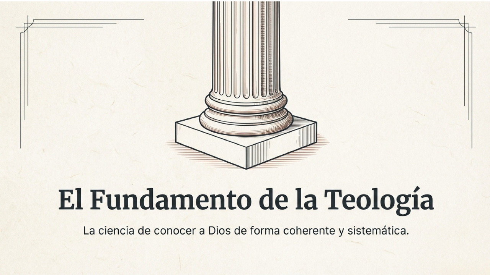
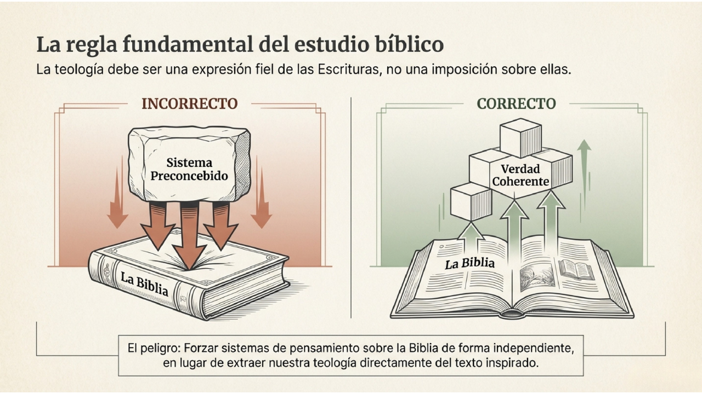
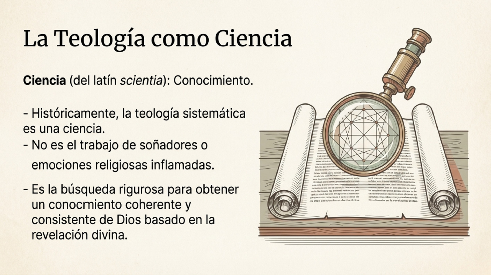
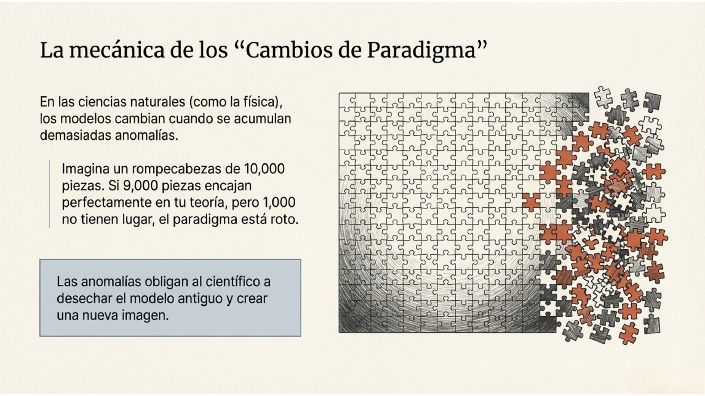
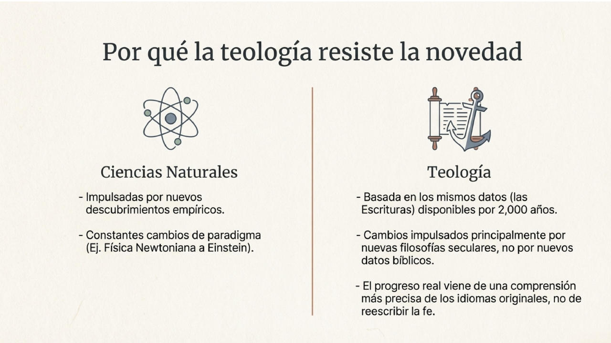
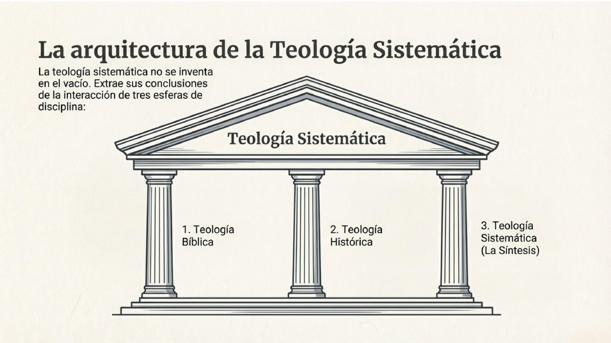
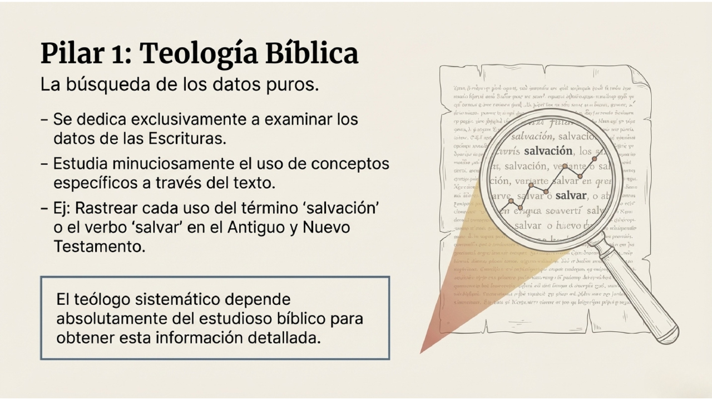
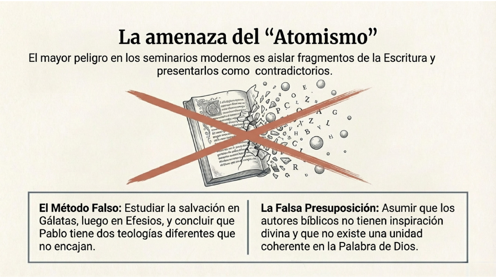
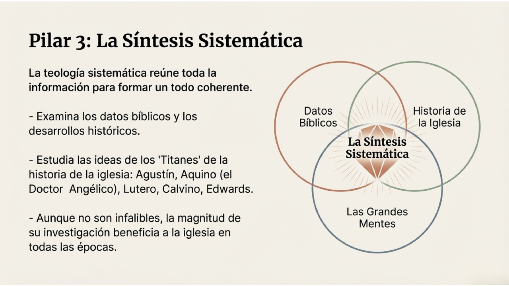
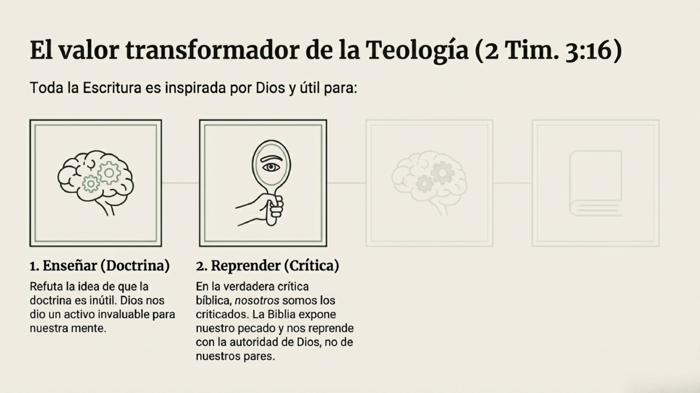
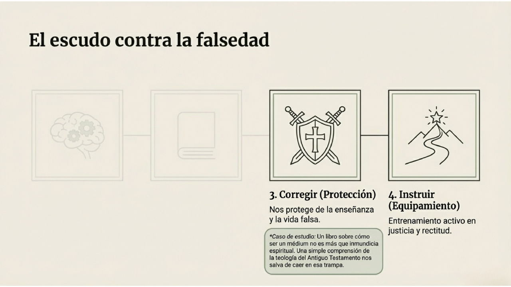
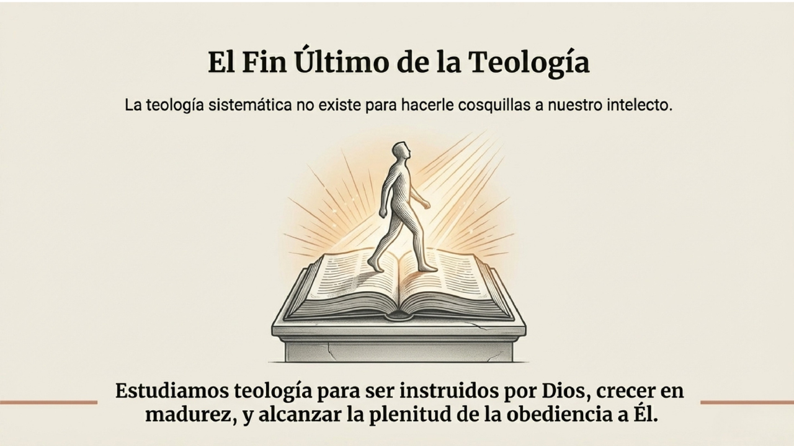